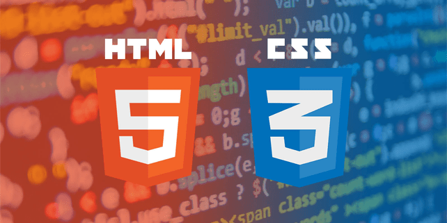

Bienvenidos
Esta página web fue creada con HTML
aplicando estilo con CSS
CSS son las siglas en inglés de Cascading
Style Sheets, que significa «hojas de estilo en cascada».
Es un lenguaje que maneja el diseño y presentación de las
páginas web, es decir, cómo lucen cuando un usuario las
visita.

Cynthia Yelithza Linares Ascencio, #20 1° de bachillerato